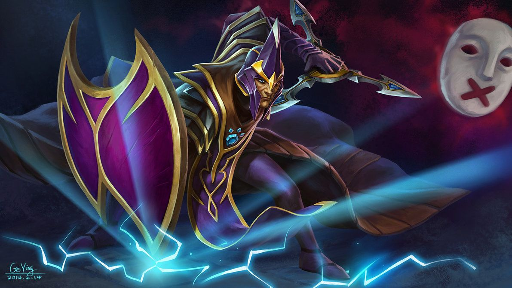

HTML/CSS WEBSITE MADE BY MARTIN (MIO) LUNA

HTML/CSS WEBSITE MADE BY MARTIN (MIO) LUNA
SILENCER

Part of the seventh and final generation of a carefully designed pedigree, Nortrom was bred by the ancient order of the
Aeol Drias to be the greatest magic user the world had ever seen. He was the prophesied one, the culmination of
two-hundred years of careful pairings, a war-mage who would bring glory to the order, and destruction to their sworn
enemies, The Knights of the Fold.
Raised with other young mages in a hidden cantonment among the hills of the Hazhadal barrens, the order's preceptors
waited for Nortrom's abilities to manifest. While the other students honed their talents with fire, or ice, or
incantatory spells, Nortrom sat silent and talentless, unable to cast so much as a hex. As the day of final testing
approached, he still hadn't found his magic. In disgust, the preceptors berated him, while the children laughed. "You
are no mage," the head of the order declared. Still, Nortrom did not slink away. He entered the day of testing and faced
down the young mages who had mocked him. And then his preceptors learned a valuable lesson: a lack of magic can be the
greatest magic of all. Nortrom silenced the young mages one by one and defeated them in single combat, until he alone
stood as champion of the Aeol Drias, in fulfillment of the prophecy.
Nortrom, the Silencer, is a ranged intelligence hero who can be played as a support, carry, or initiator. He is one of
the few intelligence heroes that truly benefit from intelligence items and is effective against heroes that rely mostly
on spells, as he can silence them while stealing their intelligence and adding it to his own. He is a notorious
anti-caster hero who can disrupt the magical abilities of his enemies and cripple spellcasters throughout the game.
Arcane Curse slows and causes enemies to lose health for a set duration, but increases with each spell the enemy casts,
forcing them to either wait and cast no spell until it expires, or cast spells and prolong the debuff and thus take more
damage. Last Word places a curse on Nortrom's target that damages and silences for a long duration if the target casts a
spell. If the target does not cast a spell before the curse duration ends the effects are the same. Glaives of Wisdom is
an active attack modifier that deals a percentage of Nortrom's intelligence as pure damage, as well as steal
intelligence with every attack. On top of that, the glaives also allow him to permanently steal the intelligence of
enemy heroes that die near him or are directly killed by him, adding it to his own. This rewards his presence in
teamfights, also making his glaives ever stronger as the battle goes on. Nortrom's ultimate, Global Silence, silences
all enemy units on the map for a few seconds. A well-timed Global Silence can be used to save yourself or an ally,
initiate a teamfight, or ruin the enemy's initiation.